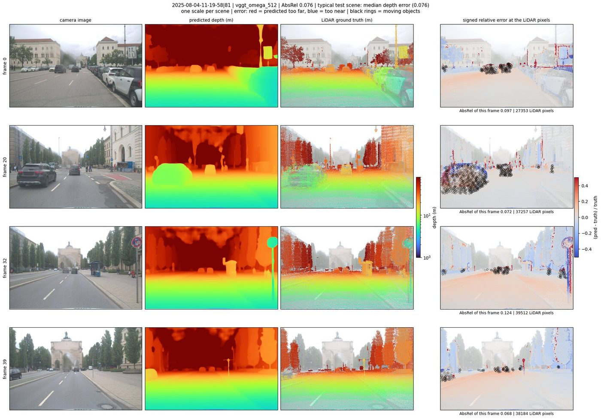
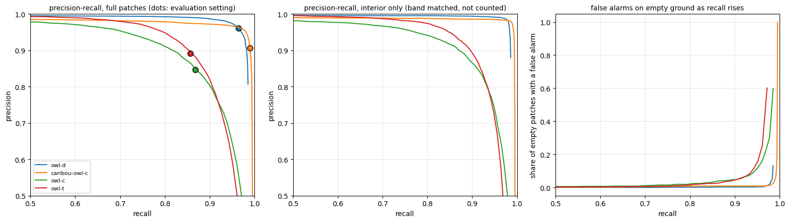

Abhishek Singh
Machine learning for Earth observation and remote sensing. Berlin, Germany.
Looking for a PhD position in Earth observation, remote sensing or GeoAI, or a research role. Available immediately.



Projects
Do optical foundation models transfer to SAR?
Glacier calving-front delineation on the CaFFe benchmark with frozen encoders: satellite-pretrained DINOv3, photo-pretrained DINOv3 and C-RADIOv4-H, and two SAR-pretrained encoders. Only small probes and heads are trained on top. A U-Net trained from scratch is the reference.
- A 0.57M-parameter decoder on frozen C-RADIO features matches the 7.8M-parameter U-Net on front error: 979 ± 31 m vs 979 m on the two test glaciers
- Per glacier: Columbia 1,067 vs 1,080 m, Mapple 464 vs 474 m; the decoder misses 7–9 of 122 fronts per seed, the U-Net 3
- Zones, 3-class patch mIoU on test: a linear probe on frozen photo DINOv3 0.610, C-RADIO 0.602, U-Net 0.594
- Photo-pretrained encoders beat the two SAR-pretrained ones we tried by 0.22–0.25 mIoU; satellite pretraining gave no clear advantage over photo pretraining
- Linear probes alone draw no front on 30–57% of test images: fronts need a learned head

Where VGGT-Ω fails on real driving data
A stratified failure analysis of the released VGGT-Ω 3D reconstruction checkpoint on FZI-AURA, a dataset published after the model and therefore outside its training data. Error is broken down by weather, lighting and object motion instead of averaged, with predictions written down before the runs.
- Held-out test split: AbsRel 0.082, δ<1.25 = 94.3%, across 107 unseen scenes
- Moving objects 0.203 against parked 0.099 and background 0.077
- Counting only object interiors, moving is still worse by +0.062 in 70 of 76 scenes
- Dry daylight 0.081, wet night 0.159, wet twilight 0.245
- 394 scenes analysed; the 20 scenes every rule was tuned on are excluded from all tables

Change detection with frozen DINOv3 features
Building change detection on frozen satellite-pretrained DINOv3 embeddings, over SpaceNet-7 monthly imagery and LEVIR-CD, with decoder designs compared on identical features.
- LEVIR-CD test F1 0.910, IoU 0.835 — difference head, 0.56M parameters
- Cross-attention head, 0.83M parameters: F1 0.908. The smaller head was the one to keep
- SpaceNet-7 monthly change F1 0.178, building IoU 0.704 — a far harder task
- Training-free embedding baselines reach F1 0.013–0.019, so the training carries the result
Overhead caribou detectors across herds and years
Cross-herd, cross-year evaluation of four overhead detection models (one caribou-specific) on aerial survey imagery of the Central Arctic Herd, Alaska, 2022, after development on the Porcupine Herd, 2017. Error bars from resampled mosaics, a failure analysis and a threshold sweep.
- Locked test domain: 2,607 patches from 43 mosaics, 12,456 annotated animals
- The two best models tie threshold-free: average precision 0.978 vs 0.977, paired difference +0.001 [−0.004, +0.008] over 2,000 resamples
- The gap at the fixed setting is an operating-point effect: one model holds F1 above 0.95 for any relative cut from 0.15 to 0.55, the other only from 0.35 to 0.60
- A 16 px border band is 12% of the area but holds 53% of the errors; at full resolution most are real caribou the patch’s ground truth does not list
- The two remaining models trail clearly: average precision 0.927 and 0.919

Winter wheat vegetation indices for Bavaria
Monthly NDVI and NIRv for winter wheat across every district of Bavaria, from Sentinel-2 composites masked with yearly 10 m crop type maps and aggregated with exact partial-pixel zonal statistics. The Sentinel-2 half of a two-person MSc capstone.
- 96 NUTS-3 regions, March to June, 2017–2024
- 1.13 TB of input imagery, 4,768 GeoTIFFs across 29 MGRS tiles per month
- 1.64 billion winter wheat pixels at 10 m, processed in 5.5 h on one A100
- Over 151,793 OCO-2 footprints, solar-induced fluorescence tracks NIRv (r = 0.54) better than NDVI (r = 0.42)

Master's thesis
Carried out at the DLR Earth Observation Center, Oberpfaffenhofen: detection of greenhouses and plastic-covered parcels in southern Germany from 20 cm aerial orthophotos, with no hand-drawn annotation anywhere in training. Labels were derived from EU parcel-level crop declarations and refined against the imagery. The detector combines a frozen satellite-pretrained DINOv3 backbone, decoded back to 20 cm by guided feature upsampling, with a trainable ResNet-34 branch and a small fusion head. Supervised by Dr Ursula Gessner (DLR) and Prof Dr Iftikhar Ahmed (University of Europe for Applied Sciences). A paper is in preparation.
How I work
Most of my projects derive training labels from registers or benchmarks that were never made for the purpose, then deal with the biases those labels carry. A result that has come back in every project so far: past a small model budget, improving the data moves accuracy further than adding model capacity does, and I measure both sides rather than assume it. Pipelines are numbered stages with pinned environments so someone else can rerun them, and evaluation is on sites and conditions held out from training, not on random splits.
Contact
- GitHub: saverin0
- LinkedIn: abhishekzsingh